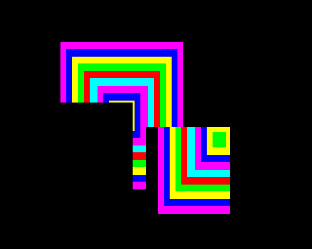

Moves a rectangluar area of the screen around - 732 bytes (4.4%)
- §1. Moving a rectangle
- §2. Check coordinate of a point is in the window bounds vertically
- §3. Check coordinate of a point is in the window bounds (horizontal or vertical)
- §4. blockCopyOrMoveScreenRectangle
- §5. Copy a rectangle of pixels on-screen to a destination on screen
- §6. Helper for rectangle copy (increment and compare)
- §7. Helper for rectangle copy (decrement and compare)
- §8. Add two points and subtract a third
- §9. Add two coordinates and subtract a third
- §10. Prepare masks ready for the rectangle copy, and return the width in bytes.

§2. Check coordinate of a point is in the window bounds vertically.
On Entry: X is the offset to the coordinate to check On Exit: .vduTempStoreDA is the error code: 0 = no error 1 = first check failed 2 = second check failed Zero flag set if no error
.checkPointIsWithinBoundsVertically = $9f7c LDY #2 fall through...
§3. Check coordinate of a point is in the window bounds (horizontal or vertical).
On Entry: X is the offset to the coordinate to check Y is the offset to the second variable to check (0 for horizontal or 2 for vertical) On Exit: A=.vduTempStoreDA is the error code (0 = no error, 1 = first check failed, 2 = second check failed) Zero flag set if no error
.checkPointIsWithinBounds = $9f7e LDA #0 STA .vduTempStoreDA DEX DEX JSR .checkPointIsWithinWindowHorizontalOrVertical INX INX LDA .vduTempStoreDA RTS
§4. blockCopyOrMoveScreenRectangle.
.blockCopyOrMoveScreenRectangle = $9f8c LDA .vdu25ParameterPlotType JSR .blockCopyOrMoveScreenRectangleInternal JMP .setGraphicsCursorPositionAndFinishPLOT
§5. Copy a rectangle of pixels on-screen to a destination on screen.
Optionally fill the source rectangle the current graphics background colour ('Move'). On Entry: A: Holds the plot type: $B8 (184) Move only relative $B9 (185) Move rectangle relative $BA (186) Copy rectangle relative $BB (187) Copy rectangle relative $BC (188) Move only absolute $BD (189) Move rectangle absolute $BE (190) Copy rectangle absolute $BF (191) Copy rectangle absolute
.blockCopyOrMoveScreenRectangleInternal = $9f95 AND #2 STA .rectCopyPlotType 0=Move, 2=Copy Set up gcol mask bytes from the plot options table LDA .gcolPlotOptionsTable STA .gcolModeMask0 LDA .gcolPlotOptionsTable + 1 STA .gcolModeMask1 LDA .gcolPlotOptionsTable - 1 STA .gcolModeMask2 LDA .gcolPlotOptionsTable + 4 STA .gcolModeMask3 Set background colour / pattern LDX #1 X = 1 for background JSR .setupCurrentPattern Copy background pattern into fill pattern LDX #7 loop counter - LDA .gxrCurrentPattern,X STA .fillPattern,X copy current pattern into fillPattern DEX for 8 bytes BPL - if (not done yet) then branch (loop back) Sort graphics cursor point and old point (the source rectangle coordinates) so we have bottom left and top right points LDX #.vduOldGraphicsCursorPixelsXLow - .vduVariablesStart JSR .sortCoordinatesAsBottomLeftAndTopRight .rectSourceLeft/Bottom = bottom left coordinates .rectSourceRight/Top = top right coordinates Calculate destination rectangle for the operation. Copy the PLOT parameter point (position to move to) into the destination bottom left LDY #.rectDestinationLeft - .vduVariablesStart copy bytes destination LDX #.vdu25ParameterXLow - .vduVariablesStart copy bytes source JSR .copyFourBytesWithinVDUVariables .rectDestinationLeft/Bottom = PLOT parameter point STY .vduTempStoreDA .vduTempStoreDA = #.rectDestinationRight - .vduVariablesStart = destination right (the destination address for the next calculation) Calculate: .rectDestinationRight/Top = (source rect top right - source rect bottom left) + destination rectangle bottom left point = (source width, height) + destination rectangle bottom left point = destination rectangle top right point LDX #.rectDestinationLeft - .vduVariablesStart } .rectDestinationRight = source } rect right + dest left - source } rect left LDY #.rectSourceRight - .vduVariablesStart } .rectDestinationTop = source } rect top + dest bottom - source } rect bottom LDA #.rectSourceLeft - .vduVariablesStart } ie. destination top right JSR .calculatePointVduYPlusVduXMinusVduA } Set X = leftmost of 'source rectangle' and 'dest rectangle' Set Y = rightmost of 'source rectangle' and 'dest rectangle' LDX #.rectSourceLeft - .vduVariablesStart LDY #.rectDestinationLeft - .vduVariablesStart JSR .sortCoordinatesXYByColumn STA .gxrScratchspace3 } [NOTE: redundant instruction] TYA } PHA } Remember Y and X, [NOTE: } redundantly preserving A] TXA } PHA } LDA .gxrScratchspace3 } [NOTE: redundant instruction] Find left edge (clip leftmost point to graphics window) LDY #0 JSR .checkPointIsWithinBounds check within bounds horizontally A is the error code (0 = in bounds, 1 = point is left of graphics window, 2 = point is right of graphics window) BEQ .yesLeftEdgeInBounds if (leftmost edge point is in bounds) then branch LSR check if off the left edge BEQ .leftEdgeNeedsClipping if (leftmost edge point is to the left of the graphics window) then branch Leftmost edge is to the right of the graphics window. Nothing to do, rectangle is entirely out of bounds, so pull remembered values and return PLA forget about the previously saved X .pullAndReturn = $9ff1 PLA forget about the previously saved Y RTS .leftEdgeNeedsClipping = $9ff3 LDX #.vduGraphicsWindowPixelsLeftLow - .vduVariablesStart start at left edge of graphics window .yesLeftEdgeInBounds = $9ff5 At this point X holds the index of the leftmost edge (which has been clipped to graphics window left) PLA A=leftmost of 'source rectangle' left and 'dest rectangle' left coordinates LDY #.vduWorkspaceI - .vduVariablesStart STY .vduTempStoreDA where to put results LDY #.rectSourceLeft - .vduVariablesStart Y=source rectangle left coordinate JSR .calculateCoordinateVduYPlusVduXMinusVduA IJ = source rectangle left coordinate + clipped left edge - leftmost of 'source rectangle' and 'dest rectangle' left coordinates = where in X to start copying/moving from (taking into account any source/destination left clip) LDY #.vduWorkspaceU - .vduVariablesStart STY .vduTempStoreDA where to put results LDY #.rectDestinationLeft - .vduVariablesStart Y=destination rectangle left coordinate JSR .calculateCoordinateVduYPlusVduXMinusVduA UV = destination rectangle left coordinate + clipped left edge - leftmost of 'source rectangle' left and 'dest rectangle' left coordinates = where in X to start copying/moving to (taking into account any source/destination left clip) PLA A=rightmost of 'source rectangle' left and 'dest rectangle' left coordinates CLC ADC #4 add four to X to get to right coordinate TAX PHA push A LDY #0 JSR .checkPointIsWithinBounds check if rightmost point is in bounds A is the error code (0 = in bounds, 1 = point is left of graphics window, 2 = point is right of graphics window) BEQ .yesRightEdgeInBounds LSR BEQ .pullAndReturn if (rightmost point is left of the graphics window) then branch (nothing to do, return) Rightmost left edge is to the right of the graphics window: clip LDX #.vduGraphicsWindowPixelsRightLow - .vduVariablesStart right edge .yesRightEdgeInBounds = $a01a PLA A=rightmost of 'source rectangle' left and 'dest rectangle' left coordinates LDY #.vduWorkspaceY - .vduVariablesStart STY .vduTempStoreDA where to put results LDY #.rectDestinationRight - .vduVariablesStart JSR .calculateCoordinateVduYPlusVduXMinusVduA .vduWorkspaceYZ = dest rect right + (clipped rightmost left point) - (rightmost left point) = clipped right edge of destination Which is larger .vduWorkspaceYZ or .vduWorkspaceUV? i.e. which is larger, the destination left edge when clipped, or destination right edge when clipped? i.e. are we completely clipped? LDA .vduWorkspaceY CMP .vduWorkspaceU LDA .vduWorkspaceZ SBC .vduWorkspaceV BPL .someOfScreenNeedsMovingOrCopying if (.vduWorkspaceYZ >= .vduWorkspaceUV) then branch (there are screen pixels that need copying) All of the source or all of the destination rectangle is clipped out. Therefore no screen pixels are to be copied/moved. Just fill in the source / dest rectangles in the background colour. LDA .rectCopyPlotType 0=Move, 2=Copy BNE .skipFillSourceRect if (copy rectangle) then branch Move rectangle, so fill source rectangle in background colour JSR .plotRectangleInternal .skipFillSourceRect = $a03a Copy destination rect to source rect LDX #.rectDestinationLeft - .vduVariablesStart source of the 'copy eight bytes' routine LDY #.rectSourceLeft - .vduVariablesStart destination of the 'copy eight bytes' routine JSR .copyEightBytesWithinVDUVariables Plot source rectangle in background colour, and return JMP .plotRectangleInternal .someOfScreenNeedsMovingOrCopying = $a044 LDA #0 STA .rectCopyShiftingLeftFlag not shifting left initially (flag = 0) LDA .vduWorkspaceI source X (low) AND .vduPixelsPerByteMinusOne STA .vduTempStoreDA DA = the offset within the byte to start copying from LDA .vduWorkspaceU destination X (low) AND .vduPixelsPerByteMinusOne the offset within the byte to start copying to SEC SBC .vduTempStoreDA compare against the offset within the byte for the source BPL + if (destination offset >= source offset) then branch (shifting bytes right or not at all) DEC .rectCopyShiftingLeftFlag we are shifting bytes left (flag = 255) AND .vduPixelsPerByteMinusOne + STA .rectCopyNumberOfTimesToShiftByte amount to shift each byte PHA Calculate number of pixels to copy into next byte EOR #$FF } CLC } negate A ADC #1 } AND .vduPixelsPerByteMinusOne STA .rectCopyShiftToNextByte Calculate pixel mask needed PLA A = amount to shift each byte CLC ADC .vduPixelsPerByteMinusOne add offset based on current MODE TAX LDA .plotByteMaskTable - 1,X read mask value for the number of pixels to shift STA .gxrScratchspace2 store pixel mask Prepare masks and byte width LDX #.vduWorkspaceU - .vduVariablesStart destination X left LDY #.vduWorkspaceY - .vduVariablesStart destination X right JSR .rectCopyPrepareMasksAndGetByteWidth STA .rectCopyByteWidth store byte width LDA .vduCurrentPlotByteMask STA .rectCopyByteMask store into current pixel mask LDA .vduTempStoreDC STA .gxrScratchspace1 LDX #0 JSR .compareCDXwithGHX compare .vduWorkspaceCD with .vduWorkspaceGH (top and bottom coordinates) BEQ .rectCopyOneRow if (top and bottom coordinates are equal) then branch (only one row to copy) Compare .vduWorkspaceCD with .vduWorkspaceOP (signed) Work out if we need to copy the rectangle from the top down or the bottom up to avoid overlapping source and destination problems. LDA .vduWorkspaceC CMP .vduWorkspaceO LDA .vduWorkspaceD SBC .vduWorkspaceP BVC + if (result of subtraction high byte remains within the range -128 to 127) then branch Result of subtraction high byte moved outside the range -128 to 127 EOR #$80 flip sign bit + BMI .rectCopyDecrementingRows Main loop to copy rows, incrementing the row each time - JSR .rectCopyOneRow LDX #0 JSR .incWorkspaceCDCompareGH increment .vduWorkspaceCD LDX #.vduWorkspaceO - .vduWorkspaceC JSR .incWorkspaceCDCompareGH increment .vduWorkspaceOP, compare with .vduWorkspaceST BNE - JMP .rectCopyOneRow .rectCopyDecrementingRows = $a0bc LDX #.vduWorkspaceC - .vduVariablesStart LDY #.vduWorkspaceG - .vduVariablesStart JSR .exchangeTwoVDUBytes LDX #.vduWorkspaceO - .vduVariablesStart LDY #.vduWorkspaceS - .vduVariablesStart JSR .exchangeTwoVDUBytes Main loop to copy rows, decrementing the row each time - JSR .rectCopyOneRow LDX #0 JSR .decWorkspaceCDCompareGH decrement .vduWorkspaceCD LDX #.vduWorkspaceO - .vduWorkspaceC JSR .decWorkspaceCDCompareGH decrement .vduWorkspaceOP, compare with .vduWorkspaceST BNE - .rectCopyOneRow = $a0d9 .vduWorkspaceKL = .vduWorkspaceCD LDX #.vduWorkspaceC - .vduVariablesStart LDY #.vduWorkspaceK - .vduVariablesStart JSR .copyTwoBytesWithinVDUVariables .vduWorkspaceWX = .vduWorkspaceOP LDX #.vduWorkspaceO - .vduVariablesStart LDY #.vduWorkspaceW - .vduVariablesStart JSR .copyTwoBytesWithinVDUVariables Is .vduWorkspaceCD in the graphics window vertically? LDX #.vduWorkspaceC - .vduVariablesStart JSR .checkPointIsWithinBoundsVertically PHA remember result of bounds test Is .vduWorkspaceOP in the graphics window vertically? LDX #.vduWorkspaceO - .vduVariablesStart JSR .checkPointIsWithinBoundsVertically BEQ .inBoundsVertically PLA BNE .return32 if (.vduWorkspaceCD is out of bounds vertically) then branch (return) LDA .rectCopyPlotType 0=Move, 2=Copy BEQ .moveRectRow if (move) then branch .return32 = $a0fc RTS .moveRectRow = $a0fd LDX #.vduWorkspaceA - .vduVariablesStart LDY #.vduWorkspaceE - .vduVariablesStart JMP .copyCoordinatesSetMasksAndFillRowLocal [NOTE: no need for this local jump, just JMP .copyCoordinatesSetMasksAndFillRow] .inBoundsVertically = $a104 PLA recall result of first bounds test BEQ .doneClippingVertically if (.vduWorkspaceCD is in bounds) then branch Fill row from .vduWorkspaceMN to .vduWorkspaceQR LDX #.vduWorkspaceM - .vduVariablesStart LDY #.vduWorkspaceQ - .vduVariablesStart .copyCoordinatesSetMasksAndFillRowLocal = $a10b JMP .copyCoordinatesSetMasksAndFillRow .doneClippingVertically = $a10e LDX #.vduWorkspaceI - .vduVariablesStart JSR .gxrSetScreenAddressAndSetGraphicsColourMask prepare graphics variables BIT .rectCopyShiftingLeftFlag BMI .rectCopyRowIntoCache if (flag >= 128) then branch Decrement graphics cursor cell address by eight SEC LDA .vduScreenAddressOfGraphicsCursorCellLow SBC #8 STA .vduScreenAddressOfGraphicsCursorCellLow BCS .rectCopyRowIntoCache DEC .vduScreenAddressOfGraphicsCursorCellHigh .rectCopyRowIntoCache = $a123 Copy one row of screen pixels into cache, shifting the pixels as needed ready for writing to the destination. LDA .rectCopyByteWidth STA .vduTempStoreDD store byte width (loop counter) .rectCopyRowLoop = $a128 get screen byte !if (MACHINE = BBC_B) | (MACHINE = ELECTRON) { LDA (.vduScreenAddressOfGraphicsCursorCellLow),Y } else if MACHINE = BBC_B_PLUS { JSR .checkPixelIsBackgroundColourFast read byte from screen EOR .vduBackgroundGraphicsColour undo the unwanted eor from subroutine call } else { +unknown_machine } LDX .rectCopyShiftToNextByte number of times to shift left BEQ + Shift A left by X bits: i.e. A = A << X .shiftByteLeftLoop = $a12f ASL DEX BNE .shiftByteLeftLoop + STA .vduTempStoreDA store pixels from the previous byte SEC JSR .moveGraphicsCursorAddressTotheRight get screen byte !if (MACHINE = BBC_B) | (MACHINE = ELECTRON) { LDA (.vduScreenAddressOfGraphicsCursorCellLow),Y } else if MACHINE = BBC_B_PLUS { LDX .vduTempStoreDA remember DA in X JSR .checkPixelIsBackgroundColourFast read byte from screen EOR .vduBackgroundGraphicsColour undo the unwanted eor from subroutine call STX .vduTempStoreDA undo the unwanted sta from subroutine call } else { +unknown_machine } LDX .rectCopyNumberOfTimesToShiftByte BEQ .afterShifting Shift A right by X bits: i.e. A = A >> X .shiftByteRightLoop = $a140 LSR DEX BNE .shiftByteRightLoop .afterShifting = $a144 EOR .vduTempStoreDA } AND .gxrScratchspace2 } apply pixel mask, with the } previous byte data EOR .vduTempStoreDA } LDX .vduTempStoreDD STA .rectCopyRowCache,X store into current row data DEC .vduTempStoreDD loop counter BPL .rectCopyRowLoop The row bytes are now stored in cache Fill row from .vduWorkspaceMN to .vduWorkspaceQR LDX #.vduWorkspaceM - .vduVariablesStart LDY #.vduWorkspaceQ - .vduVariablesStart JSR .copyCoordinatesSetMasksAndFillRow If moving rather than copying, call .moveRectRow LDA .rectCopyPlotType 0=Move, 2=Copy BNE .rectSkipMove if (copy) then branch JSR .moveRectRow .rectSkipMove = $a163 LDX #.vduWorkspaceU - .vduVariablesStart JSR .gxrSetScreenAddressAndSetGraphicsColourMask prepare graphics variables Write the mask of the initial byte LDA .rectCopyByteMask STA .vduTempStoreDA If width is zero, then there are no whole bytes to copy, jump forward LDX .rectCopyByteWidth BEQ .rectHaveFilledRowWholeBytes Write the first byte of the row, a masked partial byte JSR .rectWritePatternByteMasked Now make the mask full for the run of whole bytes to write LDA #$FF STA .vduTempStoreDA Write the whole bytes along the row in a loop JMP .rectPatternFillRowEntry .rectPatternFillRowLoop = $a17c LDA .rectCopyRowCache,X store screen byte !if (MACHINE = BBC_B) | (MACHINE = ELECTRON) { STA (.vduScreenAddressOfGraphicsCursorCellLow),Y } else if MACHINE = BBC_B_PLUS { JSR .plotFast write byte to screen } else { +unknown_machine } .rectPatternFillRowEntry = $a181 SEC JSR .moveGraphicsCursorAddressTotheRight DEX BNE .rectPatternFillRowLoop .rectHaveFilledRowWholeBytes = $a188 With the whole bytes done, create a mask for the final byte LDA .gxrScratchspace1 EOR #$FF AND .vduTempStoreDA STA .vduTempStoreDA .rectWritePatternByteMasked = $a191 Write the final byte of the row !if (MACHINE = BBC_B) | (MACHINE = ELECTRON) { LDA .rectCopyRowCache,X EOR (.vduScreenAddressOfGraphicsCursorCellLow),Y AND .vduTempStoreDA EOR (.vduScreenAddressOfGraphicsCursorCellLow),Y STA (.vduScreenAddressOfGraphicsCursorCellLow),Y RTS } else if MACHINE = BBC_B_PLUS { LDA .vduTempStoreDA stash value at $DA which subroutine call will corrupt STA .vduTempStoreDB JSR .checkPixelIsBackgroundColourFast read byte from screen EOR .vduBackgroundGraphicsColour undo the unwanted eor from subroutine call STA .vduTempStoreDA set $DA to ($D6),Y EOR .rectCopyRowCache,X AND .vduTempStoreDB EOR .vduTempStoreDA JMP .plotFast write byte to screen } else { +unknown_machine }
§6. Helper for rectangle copy (increment and compare).
Increment .vduWorkspaceCD[X] Compare with .vduWorkspaceGH[X] On Entry: X: offset from .vduWorkspaceC (in practice 0 for .vduWorkspaceCD or 12 for .vduWorkspaceOP) On Exit: C,Z: We set flags comparing .vduWorkspaceCD[X] with .vduWorkspaceGH[X]
.incWorkspaceCDCompareGH = $a19d Increment .vduWorkspaceCD[X] INC .vduWorkspaceC,X BNE .compareCDXwithGHX INC .vduWorkspaceD,X JMP .compareCDXwithGHX
§7. Helper for rectangle copy (decrement and compare).
Decrement .vduWorkspaceCD[X] Compare with .vduWorkspaceGH[X] On Entry: X: offset from .vduWorkspaceC (in practice 0=.vduWorkspaceCD or 12=.vduWorkspaceOP) On Exit: C,Z: We set flags comparing .vduWorkspaceCD[X] with .vduWorkspaceGH[X]
.decWorkspaceCDCompareGH = $a1a8 Decrement .vduWorkspaceCD[X] LDA .vduWorkspaceC,X BNE + DEC .vduWorkspaceD,X + DEC .vduWorkspaceC,X .compareCDXwithGHX = $a1b3 LDA .vduWorkspaceC,X CMP .vduWorkspaceG,X BNE + LDA .vduWorkspaceD,X CMP .vduWorkspaceH,X + RTS
§8. Add two points and subtract a third.
vdu[.vduTempStoreDA,DB] = vdu[Y+0,Y+1] + vdu[X+0,X+1] - vdu[A+0, A+1] vdu[(.vduTempStoreDA,DB)+2] = vdu[Y+2,Y+3] + vdu[X+2,X+3] - vdu[A+2, A+3]
.calculatePointVduYPlusVduXMinusVduA = $a1c2 JSR .calculateCoordinateVduYPlusVduXMinusVduA Move A,X,Y,and DA on by 2 for Y coordinates INY INY INX INX CLC ADC #2 INC .vduTempStoreDA INC .vduTempStoreDA fall through...
§9. Add two coordinates and subtract a third.
vdu[vduTempStoreDA,DB] = vdu[Y,Y+1] + vdu[X,X+1] - vdu[A, A+1]
.calculateCoordinateVduYPlusVduXMinusVduA = $a1d0 STA .gxrScratchspace3 } TXA } PHA } Remember X,Y, preserving A TYA } PHA } LDA .gxrScratchspace3 } PHA remember A DE/Scratchspace3 = vdu[X] + vdu[Y] CLC LDA .vduVariablesStart,X ADC .vduVariablesStart,Y STA .vduTempStoreDE DE = vdu[X] + vdu[Y] LDA .vduVariablesStart+1,X ADC .vduVariablesStart+1,Y STA .gxrScratchspace3 scratchspace = vdu[X+1] + vdu[Y+1] PLA recall A TAX X=original A LDA .gxrScratchspace3 PHA remember vdu[X+1] + vdu[Y+1] vdu[vduTempStoreDA] = DE/Scratchspace3 - vdu[A] LDY .vduTempStoreDA Y=DA SEC } LDA .vduTempStoreDE } SBC .vduVariablesStart,X } vdu[.vduTempStoreDA] = vdu[X] + } vdu[originalY] - vdu[originalA] STA .vduVariablesStart,Y } PLA recall A SBC .vduVariablesStart+1,X STA .vduVariablesStart+1,Y vdu[.vduTempStoreDA+1] = vdu[X+1] + vdu[originalY+1] - vdu[originalA+1] STX .gxrScratchspace3 remember original A PLA } TAY } PLA } Recall A,X,Y TAX } LDA .gxrScratchspace3 } RTS
§10. Prepare masks ready for the rectangle copy, and return the width in bytes..
On Exit: .vduTempStoreDC: pixel mask .vduCurrentPlotByteMask: pixel mask A = byte width to copy
.rectCopyPrepareMasksAndGetByteWidth = $a210 LDA .vduVariablesStart+1,Y } PHA } push destination right X coordinate LDA .vduVariablesStart,Y } PHA } Calculate Y = table offset AND .vduPixelsPerByteMinusOne get offset within a byte CLC ADC .vduPixelsPerByteMinusOne add value based on current MODE TAY Read the byte value that will set one pixel to white leaving the remainder black. LDA .sixteenColourMODEMaskTable - 1,Y EOR .plotByteMaskTable - 1,Y just the rightmost pixels STA .vduTempStoreDC LDA .vduVariablesStart,X leftmost destination X coordinate Calculate Y = table offset AND .vduPixelsPerByteMinusOne get offset within a byte ADC .vduPixelsPerByteMinusOne add value based on current MODE TAY LDA .plotByteMaskTable - 1,Y STA .vduCurrentPlotByteMask Calculate (A, vduTempStoreDD) = byte width to copy SEC PLA destination right X coordinate (low) ORA .vduPixelsPerByteMinusOne round up to a byte's worth SBC .vduVariablesStart,X take of the left edge (low) TAY remember in Y PLA destination right X coordinate (high) SBC .vduVariablesStart+1,X take off left edge (high byte) STA .vduTempStoreDD store TYA recall low byte A is low byte .vduTempStoreDD is high byte MODE vduPixelsPerByteMinusOne divide 0 7 /8 1 3 /4 2 1 /2 3 (not a graphics mode) 4 7 /8 5 3 /4 LDY .vduPixelsPerByteMinusOne CPY #3 BEQ .divideTwo BCC .divideLow Divide by four LSR .vduTempStoreDD ROR .divideTwo = $a253 LSR .vduTempStoreDD ROR .divideLow = $a256 LSR divide low byte by two. No need to RTS divide high byte by two, since it will already be zero by this point.